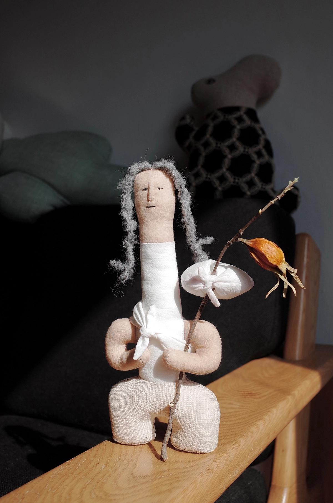
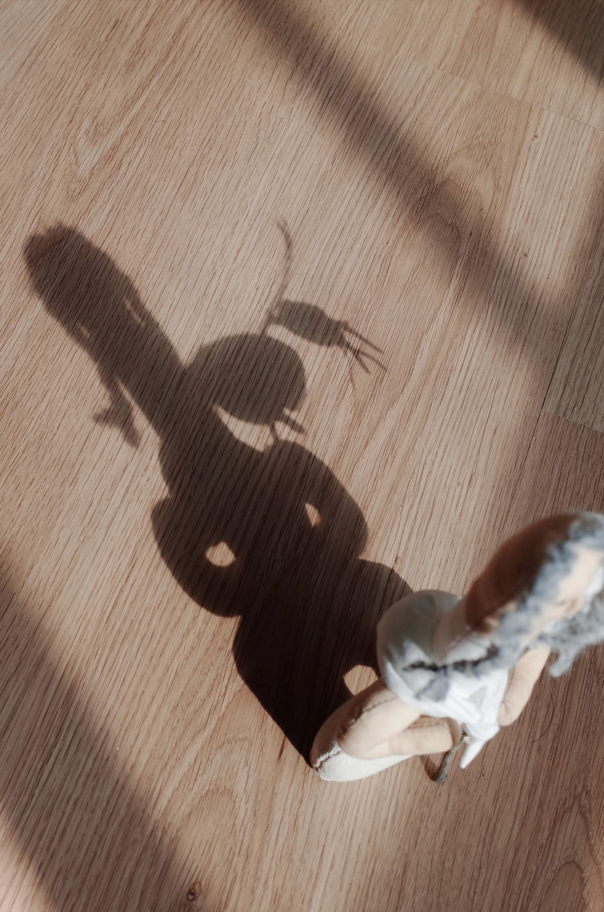
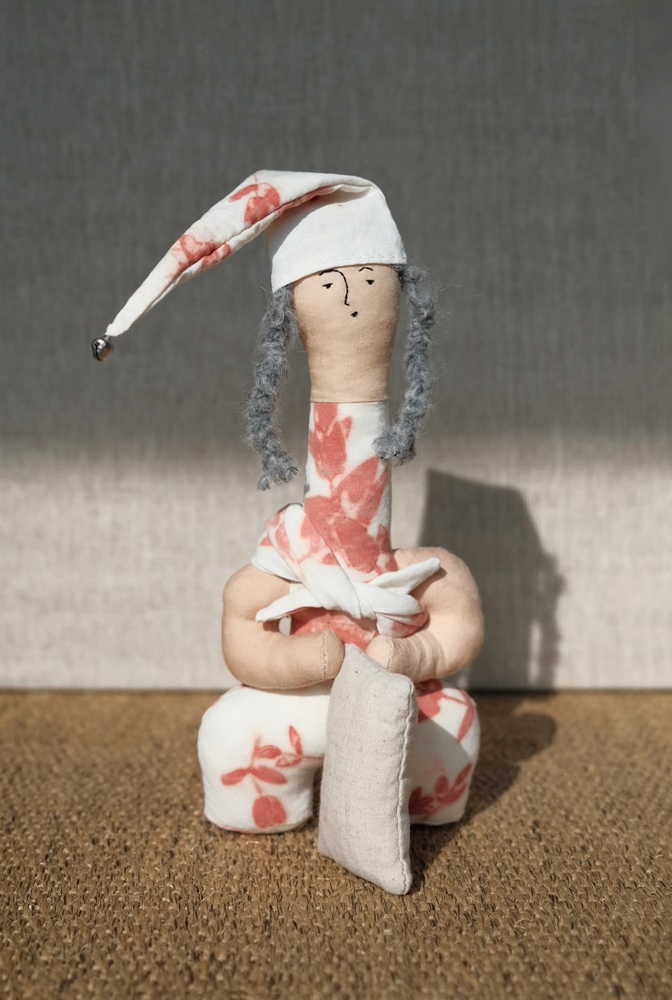
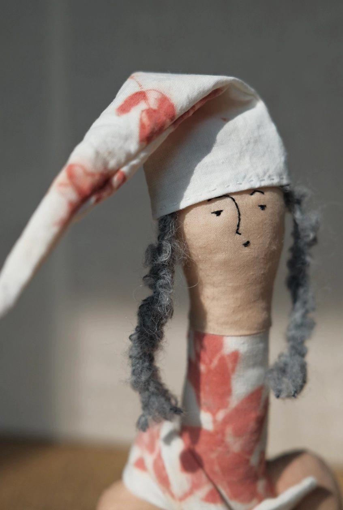
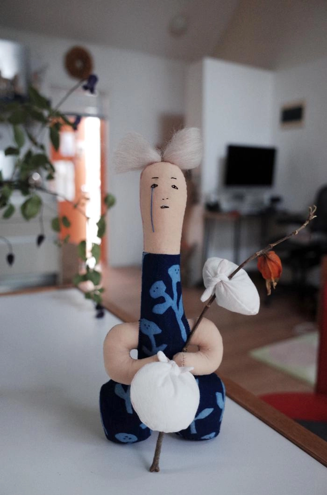
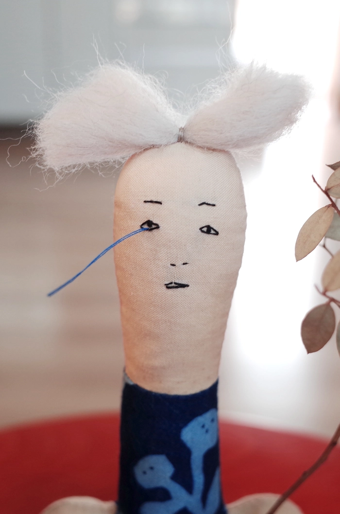

| 이름 | 성주옹 |
| 담당 | 집 |
| 성격 | 묵직하고 신뢰감 있는 성격. 말수는 적지만 존재감은 크다. |
| 좋아하는 | 캄캄한 밤, 문 열리는 소리, 집 안에 쌓이는 시간 |
| 싫어하는 | 스며드는 불안, 이유 없이 들어오는 나쁜 기운 |
귀여운 얼굴을 짚가면으로 감쪽같이 가리고서, 근엄하게 집을 지키고 서 있는 옹입니다. 가면 사이로 들어오는 바람과 기운을 가만히 걸러내지요. 나쁜 기운은 문 앞에서 멈추게 하고, 좋은 기운은 집 안에 오래 머물게 합니다. 성주옹은 늘 말없이 자리를 지키지만, 그 존재만으로도 집은 한결 단단해집니다.


| 이름 | 구름보따리옹 |
| 담당 | 없음 |
| 성격 | 느긋하고 유연한 성격. 오래 생각하지 않고도 잘 떠난다. |
| 좋아하는 | 계획 없는 여행, 낮은 구름, 갑작스러운 초대 |
| 싫어하는 | 너무 무거운 짐, 딱딱한 일정표 |
구름 같은 보따리를 둘둘 말아 등에 메고, 말린 열매 하나 달린 지팡이를 툭툭 짚으며 걷습니다. 가는 데가 있으면 가고, 멈출 자리가 보이면 그냥 멈춰요. 길을 정해두진 않지만, 이상하게 늘 좋은 데로 가게 되지요. 구름보따리옹은 머무는 데 욕심 없고, 떠나는 일에 미련도 없어요. 그래서 더 오래 기억에 남곤 합니다.


| 이름 | 부뚜막옹 |
| 담당 | 맛있는 요리, 안전한 부엌 |
| 성격 | 소탈하고 정 많은 성격. 야무진 손끝의 소유자. |
| 좋아하는 | 김을 내뿜는 냄비, 잘 익은 무우, 달그락 그릇 소리 |
| 싫어하는 | 차가운 불, 비어 있는 밥상, 조용한 부엌 |
앞치마를 두르고 머리수건을 질끈 맨 채 부엌을 지키는 옹입니다. 한 손에는 흰 무우를 들고, 불과 냄비, 칼과 도마를 번갈아 살펴보지요. 불이 너무 세면 슬쩍 헛기침을 하고, 국이 잘 끓으면 아무도 모르게 고개를 끄덕입니다. 맛뿐 아니라 부엌의 안전까지 챙기느라 늘 바쁘지만, 얼굴엔 티를 내지 않습니다. 부뚜막옹이 있는 집에서는 밥이 사람을 먼저 챙기고, 따뜻함이 식탁에 가장 먼저 올라옵니다.


| 이름 | 삼신할미옹 |
| 담당 | 잠과 꿈 |
| 성격 | 느릿하고 다정한 성격. 서두르는 법이 없다. |
| 좋아하는 | 폭신한 베개, 고른 숨소리, 새벽 직전의 고요 |
| 싫어하는 | 천둥번개, 각종 시끄러운 소음 |
베개를 품에 안고 졸린 눈으로 안방을 지키는 옹입니다. 잠요정 같은 모자를 눌러쓰고, 잠과 꿈의 경계에 가만히 앉아 있지요. 사람이 잠들면 슬쩍 다가가 좋은 꿈은 더 깊게 눌러주고, 나쁜 꿈은 베개 밑으로 밀어 넣습니다. 뒤척임이 잦은 밤엔 이불 끝을 정리해주고, 아무 이유 없이 불안한 밤엔 숨을 고르게 만들어줍니다. 삼신할미옹이 있는 안방에서는 밤이 조금 더 길어지고, 아침은 조금 더 부드럽게 찾아옵니다.


| 이름 | 훌쩍옹 |
| 담당 | 눈물 |
| 성격 | 감정에 솔직하지만 오래 붙들진 않는다. |
| 좋아하는 | 잔잔한 저녁 바람, 말 걸지 않는 친절, 적당히 흐린 날 |
| 싫어하는 | 이유를 물어보는 사람 |
훌쩍옹은 훌쩍 떠나고, 훌쩍이기도 합니다. 울려고 걷는 건 아니지만 걷다 보면 눈물이 나올 때도 있죠. 그럴 땐 그냥 고개를 살짝 돌리고 만답니다.